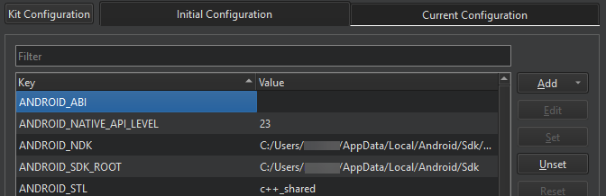
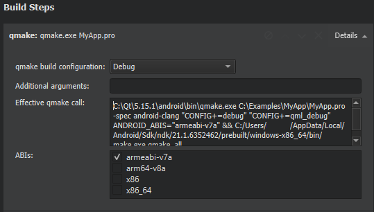
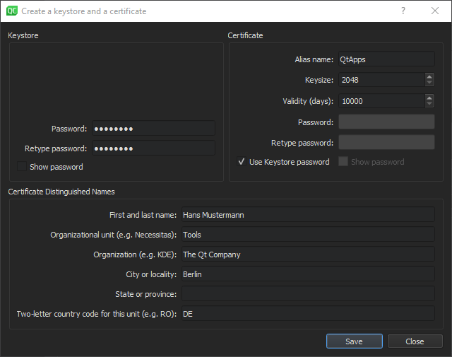

Deploying to Android
Android applications are packaged as ZIP files called Application Packages (APK) or Android App Bundles (AAB). You can install and run APK files on a device. You can upload AAB files to the Google Play store.
Qt for Android has binaries for armv7a, arm64-v8a, x86, and x86-64. To support several different ABIs in your application, build an AAB that has binaries for each of the ABIs. The Google Play store uses the AAB to generate optimized APK packages for the devices that request download and automatically signs them with your publisher key.
Qt Creator supports the following methods of deployment for Android applications:
- As a stand-alone, distributable application package (APK).
- As an app bundle (AAB) for distribution in the Google Play store.
All Qt versions do not support AABs. Qt 6.3.0 and later support multi-abi builds for applications that you build with CMake. For more information, see Qt for Android - Building User Projects.
Note: Since Qt Creator 4.12, Ministro is not supported.
To specify settings for application packages, select Projects > Build > Build Android APK > Details.
For more information about options that you have for running applications, see Android Run Settings.
Packaging Applications
Because bundling applications as APK packages is not trivial, Qt has the androiddeployqt tool. When you deploy an application using a Qt for Android kit, Qt Creator runs the tool to create the necessary files and to bundle them into an APK. For more information, see Android Package Templates.
To view the packages that the androiddeployqt tool created, select the Open package location after build check box.
Specifying Deployment Settings
The Method field lists deployment settings. To add deployment methods for a project, select Add.

To rename the current deployment method, select Rename.
To remove the current deployment method, select Remove.
Qt Creator deploys the packages on the Android device that you select in the kit selector. To add devices, select Manage.
For more information about specifying additional start options for applications, see Android Run Settings.
To remove previously installed files from the device, select Uninstall the existing app before deployment.
To install a pre-built APK, such as a 3rd-party application to a device, select Install an APK File.
Specifying Settings for Packages
To specify settings for the androiddeployqt tool, select Projects > Build & Run > Build > Build Android APK > Details.

The androiddeployqt tool create APKs based on the settings. For more information about the available options, see androiddeployqt.
You can view information about what the androiddeployqt tool is doing in Compile Output. To view more information, select the Verbose output check box.
Select Add debug server to include the debug server binary into a package.
Selecting API Level
In the Android build platform SDK field, select the API level to use for building the application. Usually, you should select the highest API level available.
Usually, you should use the highest version of the Android SDK build-tools for building. If necessary, select another version in the Android build-tools version field.
Building AABs
For testing the application locally, use the APK format because Qt Creator can install and run the package on the device. For distribution to the Google Play store, create an AAB by selecting the Build Android App Bundle (*.aab) check box.
When building with CMake, you can view the selected ABIs in Initial Configuration in the CMake section. You can set additional ABIs as values of the ANDROID_ABI key:

When building with Qbs or qmake, you can select the ABIs in the ABIs field in the Build Steps:

Signing Android Packages
To publish your application, you must sign it by using a public-private key pair that consists of a certificate and a corresponding private key and is identified by an alias. The key pair is used to verify that the future versions of your application are actually created by you.
Warning: Keep the key pair in a safe place and take back up copies because you cannot update the application if you lose the key pair.
You can use Qt Creator to generate a keystore and a self-signed certificate. The generated certificate has the structure of an X.509 v3 digital certificate. It has information about the version, serial number, and validity period of the certificate, the ID of the algorithm that is used to encrypt the data, the organization that issued the certificate, and the subject (owner) of the certificate. In case of a self-signed certificate, the issuer and owner of the certificate are the same. In addition, the certificate has information about the algorithm that is used to sign the certificate, as well as the signature of the certificate.
A password protects the keystore. In addition, you can protect each alias with its individual password.
When you sign an Android application, you must select a keystore that has certificates and a certificate alias from the keystore. The signing process embeds the public key (certificate) for the alias into the APK.
To create a keystore and a self-signed certificate:
- In the Keystore field, select Create to create a new keystore that has one key pair in the Create a Keystore and a Certificate dialog:

- In the Keystore group, enter a password to protect the keystore.
- In the Certificate group, specify the key size and validity period of the certificate. You can specify a separate password to protect the key pair or use the keystore password.
- In the Certificate Distinguished Names group, enter information about yourself and your company or organization that identifies the issuer and the owner of the key pair.
- Select Save.
- In the Keystore File Name dialog, enter a name for the keystore and select a location for it.
- In the Keystore dialog, enter the keystore password to create the key pair in the keystore.
To sign an Android package by using a key pair, set the Sign package group settings described in Specifying Settings for Packages:
- In the Keystore field, select Choose to select an existing keystore.
- In the Certificate alias field, select an alias from the list of key pairs that the keystore has.
- Select the Sign package check box to use the alias to sign the Android package.
Adding External Libraries
Qt Creator automatically detects which Qt libraries the application uses and adds them as dependencies. If the application needs external libraries, specify them in Projects > Build > Build Android APK > Additional Libraries field. The libraries are copied into your application's library folder and loaded on startup.
To add OpenSSL libraries, select Include prebuilt OpenSSL libraries in the Additional Libraries group. This will add the OpenSSL include project defined in device settings in Android OpenSSL group. This can be used for qmake and CMake projects.
Otherwise, you can manually add the paths to the required libssl.so and libcrypto.so libraries to the Additional Libraries field.
Editing Manifest Files
You can use the configuration options to specify all the settings you need for the androiddeployqt tool. You only need an Android manifest file to specify Android-specific settings, such as the application icon. However, you need the manifest file to publish the package in the Play Store. For more information about manifest files, see Qt Android Manifest File Configuration.
If you use CMake as the build system, you must specify the Android package source directory, QT_ANDROID_PACKAGE_SOURCE_DIR, in the CMakeList.txt file, as instructed in the mobile device tutorial.
To use Qt Creator to create an Android manifest file and to open it in the Android Manifest Editor:
- Select Projects > Build > Build Android APK > Create Templates.
- Check the path in Android package source directory.
- Select Copy the Gradle files to Android directory if you plan to extend the Java part of your Qt application.
- Select Finish to copy the template files to the
androiddirectory and to open the manifest file for editing.
The following table summarizes the options you can set.
| Option | Value |
|---|---|
| Package name | A valid package name for the application. For example, org.example.myapplication. An automatically generated Java launcher that is packaged with the application into an APK launches the application. |
| Version code | An internal version number for the package that determines whether one version of the application is more recent than another. |
| Version name | The version number that is visible to users. |
| Minimum required SDK | The minimum API level required to run the application if you set it manually in the manifest file. |
| Target SDK | The targeted API level of the application if you set it manually in the manifest file. |
| Application name | The application's name. |
| Activity name | An activity name. |
| Style extraction | The method that Qt uses to determine which UI style to use. |
| Screen orientation | How to determine screen orientation. |
| Application icon | Images to use as application icons depending on screen resolution. |
| Splash screen | Images to display as splash screens depending on the screen orientation and resolution. |
| Permissions | The permissions that the application needs. |
On the top header, select the XML Source tab to edit the file in XML format.
Package Names
Android application packages are usually named by using a hierarchical pattern with the levels in the hierarchy separated by periods (.). In general, a package name begins with the top level domain name of the organization followed by the organization's domain name and any subdomain names listed in reverse order. The organization can then choose a specific name for their package. Package names should be written in all lowercase characters whenever possible. For example, org.qtproject.example.
Complete conventions for disambiguating package names and rules for naming packages when the Internet domain name cannot be directly used as a package name are described in section 7.7 of the Java Language Specification.
For more information about package names, see Android Application Fundamentals.
Styling
Qt uses different methods to determine how Qt Widgets and Qt Quick Controls should be styled:
- Select Default or Full when using Qt Widgets or Qt Quick Controls 1 in your project.
Note: This method uses some Android non-SDK interfaces, that are being restricted by Google starting from Android 9.0 (API 28).
- Select Minimal when using Qt Quick Controls 2 but no Qt Widgets or Qt Quick Controls 1. This is faster than using the default or full options.
- Select None when using neither Qt Widgets nor Qt Quick Controls 1 or 2.
Screen Orientation
You can specify different options for determining screen orientation, depending on sensor readings or user preferences. The following table lists the options available.
| Orientation | Description |
|---|---|
| Unspecified | The system chooses the orientation. The policy it uses, and therefore the choices made in specific contexts, may differ from device to device. |
| Behind | Use the same orientation as the activity that's immediately beneath it in the activity stack. |
| Landscape | Landscape orientation, where the display width is larger than its height. |
| Portrait | Portrait orientation, where the display height is larger than its width. |
| Reverse landscape | Landscape orientation in the opposite direction of normal landscape. |
| Reverse portrait | Portrait orientation in the opposite direction of normal portrait. |
| Sensor landscape | Landscape orientation, but it can be either normal or reverse landscape based on the device sensor. The sensor is used even if the user has locked sensor-based rotation. |
| Sensor portrait | Portrait orientation, but it can be either normal or reverse portrait based on the device sensor. The sensor is used even if the user has locked sensor-based rotation. |
| User landscape | Landscape orientation, but it can be either normal or reverse landscape based on the device sensor and the user's preference. |
| User portrait | Portrait orientation, but it can be either normal or reverse portrait based on the device sensor and the user's preference. |
| Sensor | The orientation is determined by the device orientation sensor. The orientation of the display depends on how the user is holding the device. It changes when the user rotates the device. Some devices, however, will not rotate to all four possible orientations by default. To allow all four orientations, select the full sensor option. The sensor is used even if the user locked sensor-based rotation. |
| Full sensor | The orientation is determined by the device orientation sensor for any of the four orientations. This is similar to the sensor option, except that it allows any of the four possible screen orientations, regardless of what the device will normally do. For example, some devices won't normally use reverse portrait or reverse landscape, but this option enables them. |
| No sensor | The orientation is determined without reference to a physical orientation sensor. The sensor is ignored, so the display will not rotate based on how the user moves the device. |
| User | The user's current preferred orientation. |
| Full user | If the user has locked sensor-based rotation, this option behaves in the same way as the user option. Otherwise, it behaves the same as the full sensor option, and allows any of the four possible screen orientations. |
| Locked | Locks the orientation to its current rotation, whatever that is. |
Icons
You can set different images to be shown as application icons and splash screens on low, medium, high, and extra high DPI displays. The following list summarizes the DPI values typically associated with each category:
- Low-density (LDPI): ~120dpi
- Medium-density (MDPI): ~160dpi
- High-density (HDPI): ~240dpi
- Extra-high-density (XHDPI): ~320dpi
- Extra-extra-high-density (XXHDPI): ~480dpi
- Extra-extra-extra-high-density (XXXHDPI): ~640dpi
Specify settings for icons in the Application icon tab. Select the image with the highest resolution as the Master icon. Qt Creator resizes the icon and sets versions of it to be shown on low, medium, high, and extra high DPI displays, as needed. Alternatively, set the icons for each resolution separately.
Splash Screens
Specify settings for splash screens in the Splash screen tab. Select images to display as splash screens depending on the device orientation and screen resolution.
By default, drawing an activity hides the splash screen. To keep it visible until QNativeInterface::QAndroidApplication::hideSplashScreen() is called, select the Sticky splash screen check box.
In Image show mode, select whether to center the splash screen on the device display or scale it to fill the display.
Set a background color in Background color.
Select the images with the highest resolution as the Master image, Portrait master image, and Landscape master image.
Select Clear All to reset all settings or remove all images.
Setting Permissions
Starting from Android 6.0 (API 23), applications have to request permissions at runtime (see QtAndroidPrivate::requestPermission()). For lower Android API levels, users have to grant the permissions when they install the application. Android OS then grants the application access to the appropriate data and features.
Select the Include default permissions for Qt modules and Include default features for Qt modules check boxes to add the permissions needed by Qt libraries. This can be android.permission.WRITE_EXTERNAL_STORAGE for Qt Core or android.permission.ACCESS_BACKGROUND_LOCATION for Qt Positioning.
To add a permission, select it from the list, and then click Add.